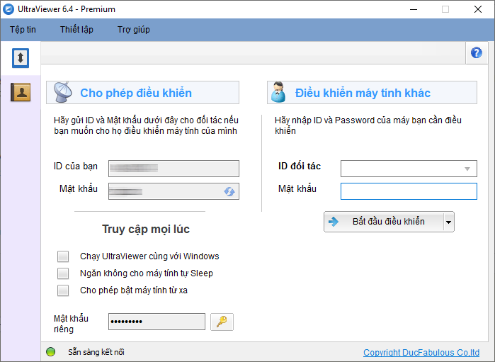
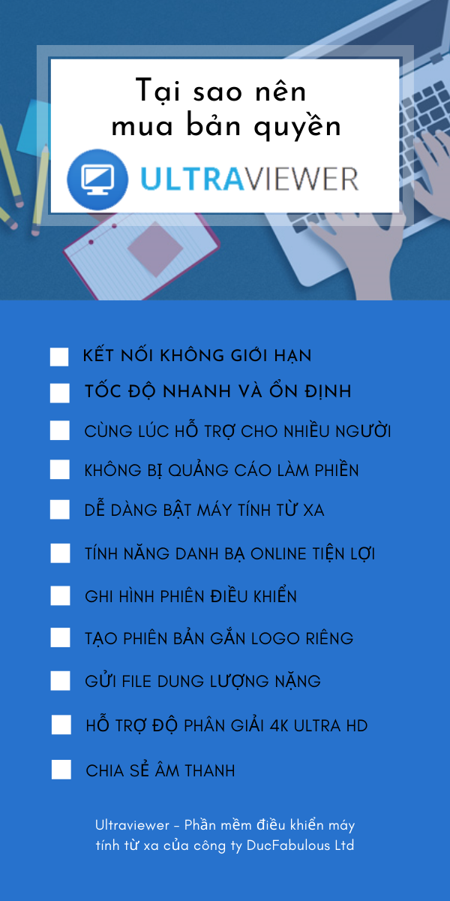
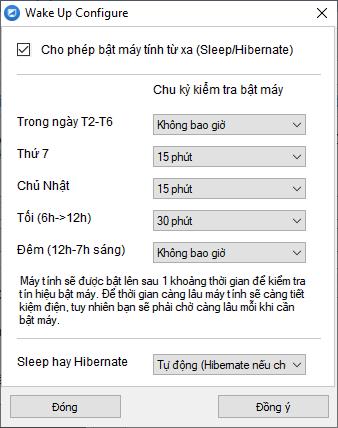
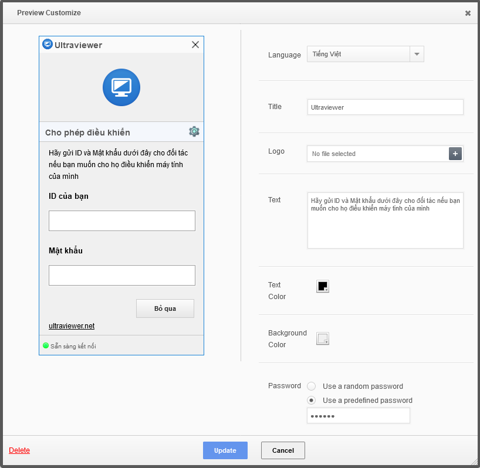

Tại sao nên mua phần mềm điều khiển máy tính từ xa UltraViewer?
UltraViewer là một trong những phần mềm điều khiển máy tính từ xa thông dụng nhất hiện nay. Ngoài phiên bản miễn phí, UltraViewer đang triển khai 3 phiên bản tính phí tùy nhu cầu sử dụng của khách hàng. Vậy chúng có gì đặc biệt hơn so với bản miễn phí? Tại sao nên mua bản quyền UltraViewer? Hãy tìm hiểu qua bài viết sau đây.
1. Tổng quan về phần mềm điều khiển máy tính từ xa UltraViewer
1.1 UltraViewer dùng để làm gì?
UltraViewer là phần mềm chuyên dùng để điều khiển máy tính từ xa nhằm mục đích hỗ trợ trong công việc. Một số ứng dụng cơ bản khi sử dụng Ultraviewer mà bạn có thể hỗ trợ cho khách hàng, đối tác, đồng nghiệp như:
- Hỗ trợ cài đặt và hướng dẫn sử dụng một phần mềm trên máy tính như Word, Excel, Power point, kế toán, quản lý bán hàng, nhập liệu, phần mềm diệt virus…
- Hỗ trợ sửa lỗi máy tính từ xa: máy tính chạy chậm, máy tính bị nhiễm virus, cần chặn quảng cáo, lỗi máy tính không in được file hoặc in ra bị lỗi, lỗi email hoặc Outlook
- Hoặc đơn giản là truy cập vào máy tính của bạn để làm việc từ xa thông qua máy tính khác mà không cần đến công ty.
Với Ultraviewer, bạn có thể hỗ trợ hoặc được hỗ trợ bất kỳ nơi đâu, không bị giới hạn thời gian và không gian. Tất cả những gì bạn cần chỉ là một chiếc máy tính có kết nối Internet ổn định và phần mềm đã được cài sẵn trên máy. Điều này sẽ giúp công việc của bạn trở nên đơn giản, nhanh chóng, thuận tiện, tiết kiệm được nhiều thời gian và công sức.

1.2 Một số tính năng của Ultraviewer
Ultraviewer có đầy đủ các tính năng cần thiết của một phần mềm điều khiển máy tính từ xa
- Hỗ trợ truy cập và điều khiển máy tính từ xa tức thì. Bạn được sử dụng phần mềm hoàn toàn miễn phí với kết nối tương đối ổn định mà không bị đòi phí bản quyền khi sử dụng lâu như 1 số bên như Teamviewer hay Anydesk.
- Chia sẻ file dễ dàng: Bạn có thể gửi file cho đối tác và nhận file một cách dễ dàng. Tất cả đều dưới sự giám sát của người bị điều khiển.
- Tính năng chat thông minh, chuyên nghiệp: Bạn có thể vừa điều khiển máy tính vừa trao đổi thông tin với bạn bè/ khách hàng thông qua cửa sổ chat của Ultraviewer. Bạn có thể bấm nút F1 để bật/tắt nhanh cửa sổ chat khi đang hỗ trợ.
- Tính năng điều khiển an toàn. UltraViewer được thiết kế để người được điều khiển có thể quan sát những gì bạn thao tác trên màn hình, kể cả quá trình di chuyển chuột. Họ có thể lấy lại quyền điều khiển bất kỳ lúc nào bằng việc kiểm soát chuột.
- Tính bảo mật cao: Khi muốn kết thúc quá trình điều khiển máy tính của người hỗ trợ, bạn có thể đóng UltraViewer lại và họ sẽ không còn nhìn thấy màn hình của bạn hay điều khiển bất cứ thứ gì được nữa. Đối tác của bạn chỉ có thể kết nối lại khi bạn cung cấp cho họ mật khẩu mới đã được Ultraview thay đổi tự động khi khởi động lại.
- Cài đặt và vận hành dễ dàng. Dung lượng phần mềm siêu nhẹ chỉ 1,5MB giúp quá trình tải xuống và cài đặt nhanh chóng. Sẵn sàng để sử dụng ngay lập tức.
- Hỗ trợ đa ngôn ngữ, hiện tại phần mềm có hỗ trợ 15 ngôn ngữ trên thế giới.
- Hỗ trợ mọi hệ điều hành Window: Window XP, Window 7, Window 8, Window 10, Window Server. Hiện nay phần mềm Utraviewer vẫn đang được nâng cấp liên tục để có thể hỗ trợ thêm các hệ điều hành khác.
2. Tại sao nên mua phần mềm điều khiển máy tính từ xa UltraViewer?
Hiện nay, Ultraviewer đang triển khai cả phiên bản miễn phí và 3 phiên bản nâng cao với những tính năng ưu việt hơn gồm Lite, Professional và Premium.
Nếu bạn là người dùng cá nhân với nhu cầu điều khiển máy tính cơ bản và hạn chế thì bản miễn phí đã là khá đủ. Tuy nhiên, nếu bạn đang thường xuyên sử dụng phần mềm điều khiển máy tính từ xa để phục vụ cho công việc một cách chuyên nghiệp thì việc mua bản quyền Ultraviewer sẽ đem lại nhiều ích lợi hơn. Bạn có thể xem chi tiết bảng tính năng giấy phép UltraViewer tại đây: Tính năng

So sánh phiên bản UltraViewer miễn phí và UltraViewer Lite
Người dùng bản UltraViewer Lite sẽ được tận hưởng thêm những tính năng nâng cao hơn mà bản miễn phí không có.
2.1 Kết nối không giới hạn thời gian
Khi mua bản quyền Ultraviewer, bạn sẽ có quyền điều khiển và truy cập máy tính từ xa không giới hạn thời gian. Đối với bản miễn phí, bạn sẽ không được đảm bảo về điều này. Số lượng máy được phép điều khiển cũng có thể bị giới hạn ở một số thời điểm nhất định ví dụ như khi hệ thống bị quá tải.
2.2 Tốc độ nhanh và ổn định
Khách hàng mua bản quyền Ultraviewer Lite trở lên sẽ được hệ thống ưu tiên băng không hơn so với khách hàng miễn phí. Do vậy, ở một số thời điểm trong giờ cao điểm, bạn vẫn sẽ duy trì điều khiển từ xa với tốc độ nhanh và ổn định. Còn ở bản Free, thi thoảng bạn có thể bị ngắt kết nối đột ngột hoặc gặp tình trạng kết nối bị chậm, không kết nối được mà không biết trước và gây gián đoạn công việc.
2.3 Gửi file dung lượng nặng
Khách hàng mua bản quyền có thể gửi file dung lượng nặng trực tiếp thông qua Ultraviewer. Bạn không cần nén file hay gửi file qua mail hay các hình thức khác. Nếu phiên bản Free chỉ hỗ trợ gửi file có dung lượng tối đa 1GB thì bản có bản quyền có thể gửi tới 2GB (bản Lite), 4GB (bản Professional) và 8GB (bản Premium). Điều này chắc chắn sẽ đem lại cho bạn trải nghiệm chia sẽ dữ liệu tuyệt vời chưa từng có.
2.4 Không bị quảng cáo làm phiền
Ở thời điểm ban đầu mới phát triển, phần mềm điều khiển máy tính từ xa Utraviewer đã cho phép người dùng sử dụng hoàn toàn miễn phí dịch vụ với mong muốn kết nối với nhiều người nhất có thể. Tuy nhiên, số lượng người dùng tăng nhanh theo thời gian sẽ gây áp lực và tiêu tốn thêm nhiều ngân sách cho hệ thống vận hành ổn định.
Việc duy trì quảng cáo trên các phiên bản Ultraviewer miễn phí hiện đang được triển khai trên diện rộng và có thể tăng thêm các suất hiện thị quảng cáo trong thời gian tới để duy trì ngân sách phục vụ cho mục đích cộng đồng. Riêng đối với khách mua bản quyền Ultraviewer, bạn sẽ được sử dụng phần mềm mà không bị quảng cáo làm phiền, giúp quá trình điều khiển máy tính dễ chịu và thoải mái hơn.
2.5 Ngăn không cho máy tính Sleep
Các loại máy tính hiện nay đều có tính năng tự động Sleep (ngủ) khi không dùng hoặc gập máy. Khi đăng ký bản quyền UltraViewer, bạn sẽ không cần phải lo lắng về việc máy tính từ xa có thể tự động Sleep và khiến mọi hoạt động kết nối, điều khiển từ xa của bạn bị gián đoạn.
2.6 Dễ dàng bật máy tính từ xa
Bật máy tính từ xa là một tính năng quan trọng, không thể thiếu đối với khách hàng cần truy cập và làm việc trên máy tính của mình. Nếu dùng bản Free, bạn cần phải treo máy 24/7 gây nhiều bất tiện và ảnh hưởng đến hoạt động bình thường của máy tính.
Khi dùng bản quyền Ultraviewer, bạn có thể thực hiện bật máy tính từ xa một cách dễ dàng chỉ trong vài phút với những thiết lập đơn giản từ trước.

2.7 Hỗ trợ độ phân giải 4K Ultra HD
Đối với những màn hình có độ giải cao, nếu dùng UltraViewer miễn phí để kết nối từ xa có thể gặp tình trạng bị thoát ra giữa chừng và không thể hoạt động bình thường được. Do vậy, để tránh sự cố này bạn nên đăng ký bản quyền UltraViewer Lite trở lên để kết nối được liền mạch và ổn định.
Ngoài ra, bạn cũng sẽ được trải nghiệm cảm giác thoải mái khi điều khiển máy tính và hỗ trợ khách hàng từ xa với hình ảnh sắc nét và rõ ràng hơn.
Khi nâng cấp lên phiên bản UltraViewer Professional, bạn sẽ được hưởng thụ thêm các tính năng sau:
2.8 Tính năng danh bạ online tiện lợi
Với tính năng danh bạ online, bạn có thể lưu danh sách một loạt máy tính khi cần kết nối nhanh mà không cần nhớ ID và mật khẩu. Việc này sẽ giúp bạn tiết kiệm thời gian đáng kể và việc hỗ trợ cũng trở nên đơn giản, thuận tiện hơn.
2.9 Chia sẻ âm thanh
Tính năng này sẽ giúp bạn chia sẻ âm thanh từ máy tính này sang máy tính khác. Trong một số trường hợp, có thể bạn rất muốn người đang điều khiển máy tính cùng nghe một số tài liệu trong máy tính của mình như âm nhạc, bản hướng dẫn, bản ghi âm một bài giảng, một cuộc họp… Sử dụng bản quyền Ultraviewer sẽ giúp quá trình kết nối và hỗ trợ từ xa của bạn trở nên trực quan và chân thật hơn bao giờ hết.
Đối với giấy phép bản quyền UltraViewer Premium, bạn sẽ có thêm những tính năng cao cấp sau:
2.10 Cùng lúc hỗ trợ cho nhiều người
Ở bản Free, bạn chỉ có thể cùng lúc điều khiển và hỗ trợ cho 1 máy tính. Hãy tưởng tượng chuyện gì sẽ xảy ra nếu bạn có nhiều nhiều khách hàng đang cần hỗ trợ gấp tại 1 thời điểm. Nếu dùng bản thông thường, bạn có thể sẽ cần xin phép ngắt kết nối khách này rồi mới có thể truy cập tới máy tính của khách khác. Với bản quyền Ultraviewer nâng cao, bạn có thể thoải mái hỗ trợ cho 3, 5 thậm chí nhiều người hơn nữa cùng lúc.
2.11 Ghi hình phiên điều khiển
Khi mua bản quyền Ultraviewer, người dùng sẽ được sử dụng tính năng quay video, ghi hình phiên điều khiển. Tính năng sẽ giúp những người quản lý quản lý, giám sát được cách nhân viên hỗ trợ khách hàng hoặc người điều khiển cần ghi lại màn hình để phục vụ mục đích giảng dạy, hướng dẫn lại cho người khác.
2.12 Tạo phiên bản gắn logo riêng
Phiên bản hỗ trợ được gắn logo riêng sẽ giúp hình ảnh thương hiệu của doanh nghiệp trở nên dễ nhận biết và gây dấu ấn đậm nét trong của khách hàng. Đây được đánh giá là cách quảng bá đơn giản, hiệu quả và nhanh chóng đối với chiến lược phát triển truyền thông của một thương hiệu.

2.13 Điều khiển đồ họa nhanh hơn; Kết nối bằng tuyến kết nối khác
So với phiên bản miễn phí và các gói bản quyền trước đó, UltraViewer Premium sẽ đem đến cho bạn trải nghiệm kết nối và làm việc từ xa vô cùng tuyệt vời. Bản Premium sẽ giúp bạn cảm nhận được tốc độ khung hình chất lượng cao hơn và nhanh hơn từ 30% - 50% so với các phiên bản khác. Do tốc độ khung hình còn phụ thuộc vào các yếu tố khác nhau như băng thông & mạng ở 2 đầu, khoảng cách/ tốc độ ping ở 2 đầu, tốc độ phần cứng của 2 máy.... nên khi các yếu tố trên được cải thiện.. thì tốc độ chênh lệch cảm nhận được sẽ còn cao hơn nữa.
Ngoài ra, đối với những người dùng thường xuyên kết nối từ xa ra nước ngoài, bản Premium sẽ cho phép bạn kết nối bằng tuyến kết nối khác để đảm bảo tốc độ và hoạt động làm việc từ xa luôn liền mạch và trơn tru.
Như vậy, có rất nhiều lý do tuyệt vời để bạn đăng ký và mua phần mềm điều khiển máy tính từ xa Ultraviewer ngay bây giờ. Chỉ với mức chi phí đầu tư siêu nhỏ và rẻ nhất thị trường hiện nay, bạn sẽ được tiếp cận với những tính năng ưu việt, cao cấp, hỗ trợ tốt nhất cho công việc của bạn.


Viết bình luận (Cancel Reply)